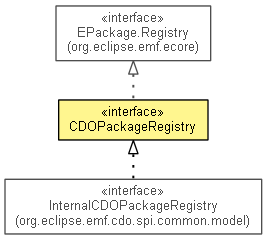

org.eclipse.emf.cdo.common.model
Interface CDOPackageRegistry
- All Superinterfaces:
- EPackage.Registry, Map<String,Object>
- All Known Subinterfaces:
- InternalCDOPackageRegistry
- All Known Implementing Classes:
- DelegatingCDOPackageRegistry
- public interface CDOPackageRegistry
- extends EPackage.Registry

An EMF package registry that is used by CDO repositories and
sessions.
- Since:
- 2.0
- No Implement
- This interface is not intended to be implemented by clients.
- No Extend
- This interface is not intended to be extended by clients.
| Nested classes/interfaces inherited from interface java.util.Map |
Map.Entry<K,V> |
| Methods inherited from interface java.util.Map |
clear, containsKey, containsValue, entrySet, equals, get, hashCode, isEmpty, keySet, put, putAll, remove, size, values |
isReplacingDescriptors
boolean isReplacingDescriptors()
putEPackage
Object putEPackage(EPackage ePackage)
- Registers an
EPackage with this package registry.
getPackageUnit
CDOPackageUnit getPackageUnit(String id)
- Since:
- 3.0
getPackageUnit
CDOPackageUnit getPackageUnit(EPackage ePackage)
getPackageUnits
CDOPackageUnit[] getPackageUnits()
- Returns all package units that are registered in this package registry.
- Since:
- 3.0
getPackageUnits
CDOPackageUnit[] getPackageUnits(long startTime,
long endTime)
- Since:
- 3.0
getPackageInfo
CDOPackageInfo getPackageInfo(EPackage ePackage)
getPackageInfos
CDOPackageInfo[] getPackageInfos()
- Returns all package infos that are registered in this package registry.
getSubTypes
Map<EClass,List<EClass>> getSubTypes()
- Since:
- 4.0
getEnumLiteralFor
EEnumLiteral getEnumLiteralFor(Enumerator value)
- Since:
- 4.0
Copyright (c) 2011, 2012 Eike Stepper (Berlin, Germany) and others.